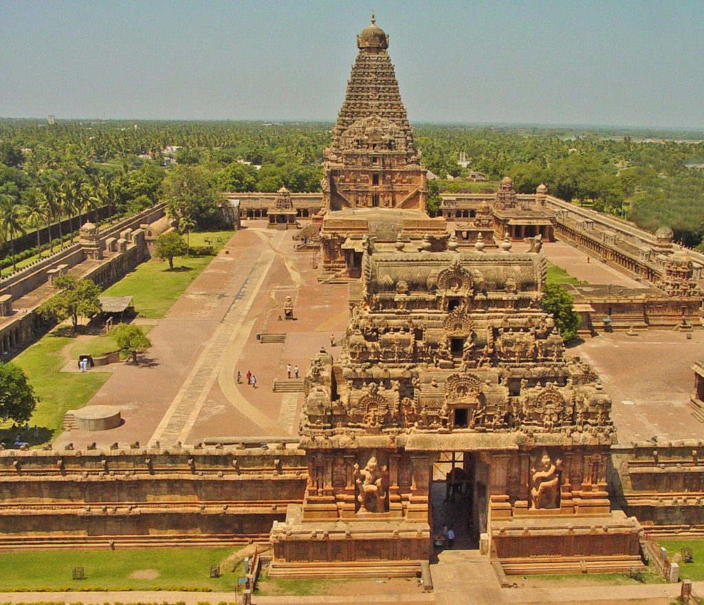

Top Temples in Tamil Nadu :
- Kapaleeswarar Temple - Chennai
- Brihadeeswarar Temple - Thanjavur
- Meenakshi Temple - Madurai
- Ramanathaswamy Temple - Rameshwaram
- Kumari Amman temple - Kanyakumari
- Naganathaswamy Temple - Thanjavur
- Ramaswamy Temple - Kumbakonam
- Nataraja Temple - Chidambaram
- Ekambareswarar Temple - Kanchipuram
- Mahabalipuram Shore Temple - Mahabalipuram
1. Kapaleeswarar Temple, Chennai

The Kapaleeshwarar Temple in Chennai is one of the popular temples in Tamil Nadu.
The 7th century Arulmigu Kapaleeswarar temple is dedicated to Goddess Parvati in the form of Karpagambal
or the ‘Goddess of the Wish-Yielding Tree’ and Lord Shiva.For a visitor in the temple, divine
bliss is all-enveloping. The Gopuram, the main sanctuary in the temple is a unique example of Dravidian
architectural style. The inscriptions in the premises of the temple date back to the 12th century.
The Temple hosts six different kinds of puja’s namely
- Closed: Monday
- Timing: 06:00 to 13:00 Hours and 16:00 to 20:00 Hours
- Charge: None
2. Brihadeeswarar Temple, Thanjavur
The Brihadeeswarar temple of Thanjavur is one of the best places to visit in Tamil Nadu.
Popularly known as
- Timing: 06:00 to 12:30 Hours 16:00 to 20:30 HRS
- Charge: None, INR 5 for special Darshan
3. Meenakshi Temple, Madurai
Madurai’s Meenakshi Sundareswarar Temple is one of the best temples in Tamil Nadu, India.
It is dedicated to Lord Shiva in the form of Sundareswarar and his consort, Goddess Parvati in
the form of Meenakshi . The complex houses 14 magnificent Gopurams including two golden Gopurams for the main deities elaborately sculptured and painted.
The exact time of the temple’s origin is
not confirmed but the structures that are standing today date mostly from the 12th to the 18th
century. The present temple standing today was built in the 17th century A.D. by the Nayak rulers.
The temple is a superb example of sculpture and magnificent architecture.The Meenakshi temple
is a majestic beauty with exquisite architecture.
The image of Goddess Meenakshi is said to be
carved out of a single emerald. This exotic temple was renovated by various kings, adding coiled
corridors and larger-than-life sculptures. According to the legend of this temple, the marriage
of the goddess Meenakshi to Shiva actually took place in Madurai and is still celebrated every
summer with great excitement.
- Timing: 05:00 to 12:30 Hours and 16:00 to 22:00 Hours
- Charge: None
4. Ramanathaswamy Temple, Rameshwaram
Located in Pamban Island, the Ramanathaswamy temple of Rameshwaram is one of the holiest
temples in Tamil Nadu. The temple houses one of the 12 Jyotirlingas and is among
the Char Dham pilgrimages. Legend has it that at Rameshwaram, Lord Rama prayed to Lord Shiva
in order to seek his blessings and ask forgiveness to kill his biggest devotee.The temple
has a linga made by Lady Sita , Lord Ram’s wife referred to as Ramalingam
and one Lord Hanuman brought from the Himalayas called Vishwalingam. The Ramanathaswamy temple has
the longest corridor in the world, about 3000 feet long.
The temple complex is also home to 22 teerthams,
or holy water bodies in the form of tanks and wells. These teerthams represent the 22 arrows
in Rama’s quiver. It is considered essential for every devotee to bathe before entering
the sanctum sanctorum.
The beautiful location and the divine ambiance of Rameshwaram
inspire visitors from all over the world throughout the year.
- Timing: 05:00 to 12:30 Hours and 16:00 to 21:00 Hours
- Charge: None
5. Kumari Amman temple, Kanyakumari
Kumari Amman Temple is located on the shore of Kanyakumari which is the confluence of
the Indian Ocean, Arabian Sea and Bay of Bengal. The temple is devoted to an incarnation
of Parvati, in the form of Kanyakumari, the Virgin Goddess. The Temple was built by
the Pandya kings in the 8th century and later renovated by the Vijayanagar,
Nayaka and Chola rulers. According to legend the temple of Goddess Kanyakumari
is dedicated to the extinguisher of evil in the form of Banasura, the demon king.
The goddesses performed severe penance to win the hand of Lord Shiva for marriage.
The bluestone idol of Devi Kanya is believed to have been installed by Sage Parashuram.
The Devi is seen in penance with a garland in her right hand, and a sparkling nose jewel.
It is believed that the nose ring is so bright that it has been mistaken as light
from the Lighthouse. The radiance has confused ships sailing in the sea and they got
wrecked in the sharp rocks. The temple of Kanyakumari is not just one of the most
beautiful temples in India but is crowded by visitors from all over the world.
The temple complex is not just a marvel to look at but blissful for your soul.
- Timing: 05:00 to 12:30 Hours and 16:00 to 22:00 Hours
- Charge: None
6. Naganathaswamy Temple, Thanjavur
 One of the famous temples in Tamil Nadu, Naganathaswamy Temple is one of the
Navagraha Temples. People from different parts of the country visit the temple
to rid themselves of Rahu Doshas.Dedicated to Sri Naganathaswamy and His consort
is Giri Gujambika, this is the only temple where Lord Rahu is enshrined in human
form whereas other of his temple have his serpent form. According to legends
Lord Rahu worshiped here in this temple on Shivaratri to redeem himself from
the curse of a rishi.
Devotees in the temple say that the milk abhishekam
to Rahu turns the milk blue. There are twelve sacred water heads in this place,
namely, Suriya Pushkarani, Gowthama Theertham, Parasara Theertham, Indira Theertham,
Prugu Theertham, Kannuva Theertham and Vasishta Theertham. A dip in the holy waters
is said to cure one of the diseases and give prosperity. It also rids of bad karma
and ultimately grants salvation.
The temple conducts six pujas daily.
The Ushakkala, Kalasandhi, Uchikkala, Sayaratchai, Irandam Kala and
Arthajama Pooja are marvelous rituals where visitors are spellbound by
the divine bliss.
- Timing: 05:00 to 12:30 Hours and 16:00 to 22:00 Hours
- Charge: None
7. Ramaswamy Temple, Kumbakonam
One of the holiest temples of Lord Ram in India, theRamaswamy Temple
in Kumbakonam is one of the most popular temples in Tamil Nadu. Achutha Nayaka
of Thanjavur constructed the Ramaswamy temple during the 16th century.
The ardent follower of the Lord has lovingly enshrined his revered.
Ramaswamy temple worships Lord Ram, the seventh incarnation of Lord Vishnu.
This temple is different from other Ram temples in India as here, Lord Ram
is seen with all his brothers, his wife Devi Sita, beloved devotee
Lord Hanuman with the musical instrument, Veena in a scene taken from
his coronation.The Maha Mandapam is enriched with intricate stone carving
works of Rama-Katha. Vamana Avatharam, Meenakshi Kalyanam, Sukreeva
Pattabisegam some of the famous carving works of this temple.
There are also 219 wall paintings, which explain the series of incidents
from the great Epic “Ramayanam” drawn in herbal colors. Pay homage to
Lord Ram and his inspirational life.
- Timing: 05:00 to 12:30 Hours and 16:00 to 22:00 Hours
- Charge: None
7. Ramaswamy Temple, Kumbakonam
One of the holiest temples of Lord Ram in India, theRamaswamy Temple
in Kumbakonam is one of the most popular temples in Tamil Nadu. Achutha Nayaka
of Thanjavur constructed the Ramaswamy temple during the 16th century.
The ardent follower of the Lord has lovingly enshrined his revered.
Ramaswamy temple worships Lord Ram, the seventh incarnation of Lord Vishnu.
This temple is different from other Ram temples in India as here, Lord Ram
is seen with all his brothers, his wife Devi Sita, beloved devotee
Lord Hanuman with the musical instrument, Veena in a scene taken from
his coronation.The Maha Mandapam is enriched with intricate stone carving
works of Rama-Katha. Vamana Avatharam, Meenakshi Kalyanam, Sukreeva
Pattabisegam some of the famous carving works of this temple.
There are also 219 wall paintings, which explain the series of incidents
from the great Epic “Ramayanam” drawn in herbal colors. Pay homage to
Lord Ram and his inspirational life.
/p>
- Timing: 05:00 to 12:30 Hours and 16:00 to 22:00 Hours
- Charge: None
8. Nataraja Temple, Chidambaram
One of the most famous temples in Tamil Nadu, the Nataraja temple is located
in the heart of the temple town of Chidambaram. This temple is one of the Panch Bhootha Sthalas
representing one of the five natural elements akasha (aether).
The temple complex is spread over 50 acres built during the days of Pallava/Chola emperors.
The temple is dedicated to Lord Shiva in form of Nataraja and Lord Govindaraja Perumal.
It is one of the few temples where both the and Vaishnavite deities are enshrined
in one place. The Ananda Tandava posture of Lord Shiva is the most noteworthy attraction.
This celestial dancing posture is one of the sources of Bharathanatyam. The demon under
Nataraja’s feet signifies ignorance. The Fire in this hand means destroyer of evil.
The
raised hand signifies that he is the savior of all life. The Ring at the back signifies the cosmos.
The drum in his hand signifies the origin of Life. There are also stucco images of
108 Bharatha Natyam Dance poses are depicted in the temple complex.
The celestial ambiance of the temple and the rich heritage of sculptures inspire every visitor.
- Timing: 06:00 to 12:00 Hours and 17:00 to 22:00 Hours
- Charge: None
9. Ekambareswarar Temple, Kanchipuram
TheEkambareswarar Temple in Kanchipuram is one of holiest Shiva temples. The temple town of Kanchipuram is considered to be the foremost among the seven prime pilgrimage centers in India. The Ekambareswarar Temple is one of the five major Shiva temples or Pancha Bootha Sthalams each representing a natural element. This temple represents the element of Earth as the worshipped deity is the Prithvi Lingam. The legend associated with the temple is that Devi Parvati, the consort of Lord Shiva worshiped a Prithivi Lingam built out of sand, under a mango tree. The 3500 years old mango tree is said to be the embodiment of the four Vedas. The tree bears fruits of four different tastes each season here. Six worship services are offered each day in this temple namely, UshadKalam, Kaalasanthi, Uchi Kaalam, Pradosham and Sayarakshai and Ardhajamam. The divine ambiance of the temple is worth your time. Marvel at the mythological stories, the architecture and the divinely blissful setting. Visit the temple and know why it is counted among the most visited temples in Tamil Nadu.
- Timing: 06:00 to 12:00 Hours and 17:00 to 22:00 Hours
- Charge: None
10. Mahabalipuram Shore Temple
Mahabalipuram Shore Temple is one of the most beautiful temples in Tamil Nadu.
Built on the shores of Mahabalipuram on the Coromandel Coast along the Bay of Bengal,
this temple is magnificent. The UNESCO World Heritage Site is known for its extraordinary
architecture.
Built-in the 7th century, Shore Temple depicts the rich legacy of
the Pallava dynasty. Ravaged by wind and sea, the temple has witnessed the historical events
of India.Shore Temple comprises three shrines, where the prominent ones are dedicated
to Lord Shiva and Lord Vishnu. The temple is covered in incredibly real and artistic sculpted
images from everyday life. Shore Temple is no more a living temple.
It is revered as a
living testimony to Pallava Dynasty and its prowess in art. In the present day, Shore Temple
makes the background of Mahabalipuram Dance Festival that is held in January /February every year.
The festival was organized to promote traditional dance as well as tourism in Mahabalipuram.
- Timing: 06:00 to 18:00 Hours
- Charge: INR 10 for Indians, INR 250 for Foreigners